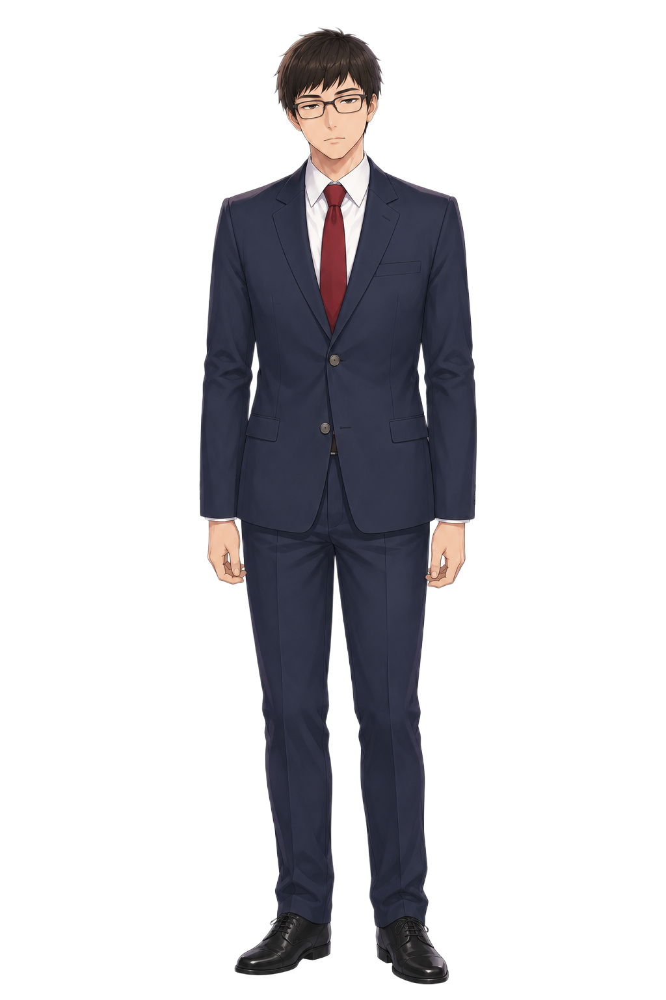
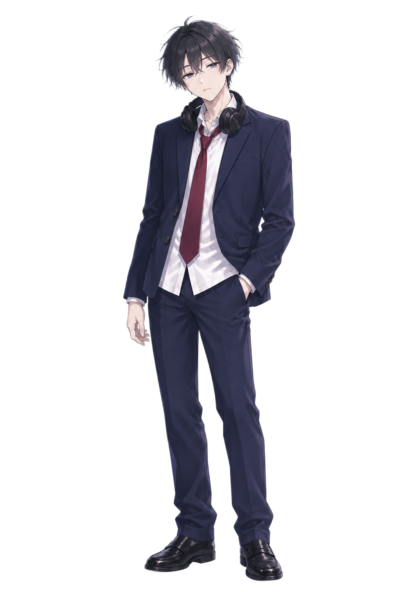

北棟 理数科 B組 NO.60
桐葉高校｜北棟・理数科 B組
✝本質✝
OVERFLOW
― 偏差値60の教室から ―
紙に刻め。は？で弾け。60秒。
両馬

三重
寺地本日の軽い課題
✝本質
?亜本質
━━━✝━━━
Z刻むタップ
Xは？下スワイプ
タップでスキップ ／ 4
偏差値60非✝本質✝
残り時間60:00
COMBO0×1.0
SCORE0
は？ 0/20誤爆 0零 0s
SKILL TRIGGER両馬二郎これまじ✝本質✝
手動発動OVERFLOW7.00
地面は忘れない
OVERFLOW0%
配信終了 ／ 寺地星のカス配信
偏差値
60
非✝本質✝
SCORE0
RUNコンボ最高 0
CHECK誤爆 0回
✝本質✝認定
匿名掲示板｜地形図好きスレ
三重「は？」
ARCHIVE / WRITTEN IN THE ORIGINAL
語録コレクション
寺地の紙に載ったもの。原作の言い回しだけを、少しずつ。
0 / 130